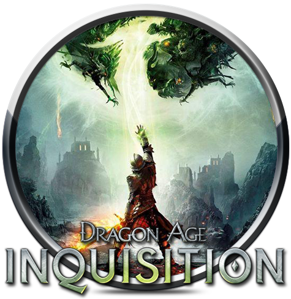

< DRAGON AGE™: INQUISITION >
개발사 : 바이오웨어
유통사: 일렉트로닉 아츠
출시일 : 2014년 11월 18일
플랫폼 : PS3, XBOX 360, XBOX ONE, PS4, PC
엔진 : 프로스트바이트 3
장르 : RPG
*
‘드래곤 에이지’ 시리즈 최신작인 ‘드래곤 에이지: 인퀴지션’은 지난 2014년 11월 18일(목) 출시되었다.
바이오웨어는 이번 작품에서 1편과 2편에서 좋은 평가를 받았던 부분을 합쳐 완전히 달라진 게임성을 선보였다.
‘드래곤 에이지: 인퀴지션’은 전작에서 일어난 ‘템플러’와 마법사 집단 간 내전으로
황폐화된 세계를 구하기 위한 주인공의 이야기를 다룬다.
스토리는 1, 2편의 흐름을 이어가지만, 세미오픈월드를 채택하며 전작과 확연히 달라진 플레이를 보여줬다.
여기에 넓어진 무대, 프로스트바이트 엔진을 이용한 화려한 그래픽,
시리즈 최초로 도입된 멀티플레이 등 전작보다 풍부한 콘텐츠를 선보인다.

직접 해본 ‘드래곤 에이지: 인퀴지션’은 명작 RPG라는 타이틀에 어울릴만한 모습을 확실히 보여줬다.
다른 어떠한 RPG와 비교해도 밀리지 않을 방대한 스토리와 전작에서 보여줬던 전투의 장점만 알짜배기로 담아냈다.
가장 인상적인 부분은 이를 오픈월드 맵에 탐험하는 재미를 더해, 몰입도 높은 세계를 구현해냈다.
◀ 돌아가기